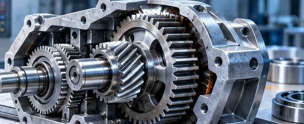

Деталі й механічні передачі
Дослідіть закономірності, змініть параметри моделі та запропонуйте власне рішення.

Коротка теорія
З’єднання бувають рознімними (болтові, шпонкові) і нерознімними (зварні, заклепкові). Механічні передачі змінюють швидкість, момент або напрям руху. Вибір залежить від навантаження та умов експлуатації.
Які теми навчальної програми поєднано?
- З’єднання деталей
- Механічні передачі
1. Сформулюйте гіпотезу
Як зміниться швидкість веденого колеса, якщо змінити число його зубців?
2. Додаткова модель і спостереження
Змінюйте параметр повзунком. Зафіксуйте щонайменше три значення та поясніть тенденцію.
3. Конструктор дослідження
Перейдіть усіма етапами та визначте, що Ви робитимете на кожному.
Етап 1/5: Проблема
4. Перевірте себе
Яке з’єднання зазвичай легко розібрати?
5. Інженерний мініпроєкт
Оберіть тип з’єднання для корпусу, який потрібно часто розбирати; обґрунтуйте вибір.
Ваші записи автоматично зберігаються у цьому браузері.
Підсумковий звіт
PDF міститиме гіпотезу, спостереження, ідею проєкту та поточний результат моделі.
У вікні друку виберіть «Зберегти як PDF».